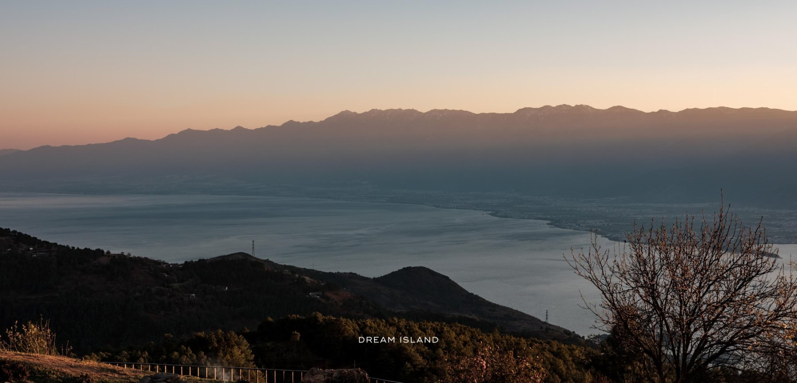
坐落于洱海之畔、伙山之巅的梦想度假地。
一座为「做回自己」而生的山海之境。
木夕大里 Dream Island 始建于 2020 年，坐落于洱海之畔的伙山。它的名字源自创始人八旬心中的一个梦——「做回自己」。
在这里，建筑不再凌驾于山水之上，而是谦卑地隐入林木与岩石之间。古老的白族村落、舒缓的山势、清澈的洱海，被重新编织进一段从容、缓慢而真实的生活。
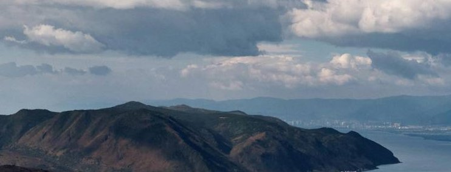
洱海 · ERHAI LAKE在这里，时间被重新校准——
以山的尺度、海的呼吸，回到生活本身。
伙山，一座静卧于双廊之上的山。木夕大里于此扎根——以本地的夯土、毛石与木作回应土地，让传统营造的智慧，在当代的栖居中重新生长。
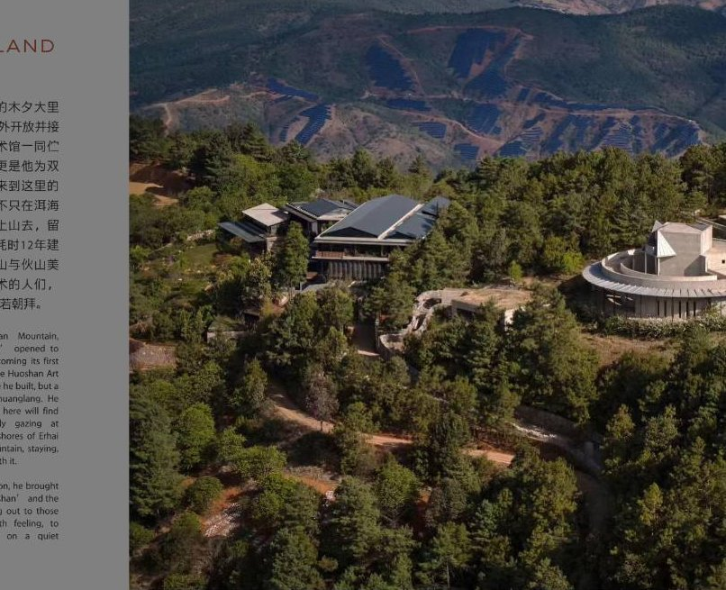
伙山 · HUOSHAN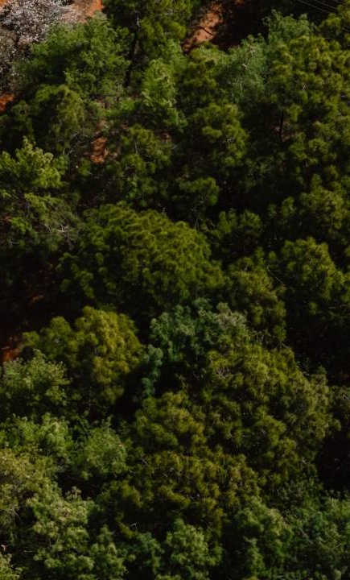
山势为顶，林海为幕，
洱海是远处永恒的微光。
由建筑师、艺术家八旬亲自操刀。一座以混凝土浇筑的山水剧场——盘旋的坡道、几何的光线与厚重的体量，让人在行走间与山、与天、与自己相遇。
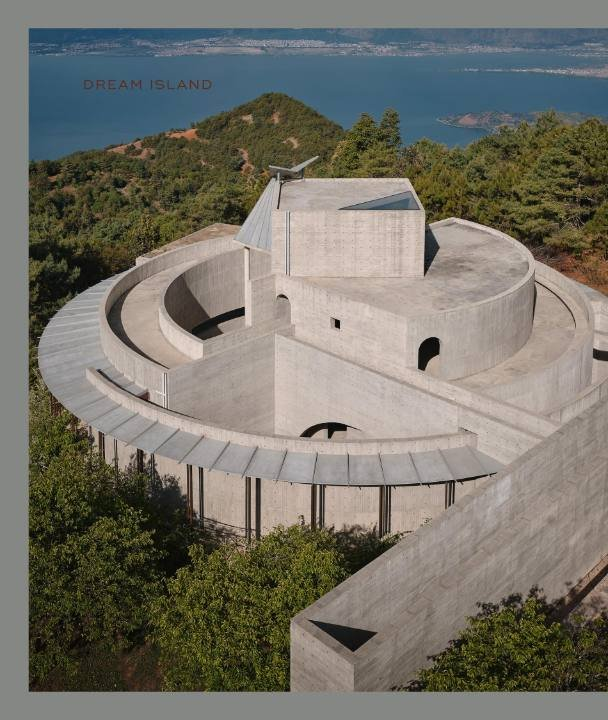
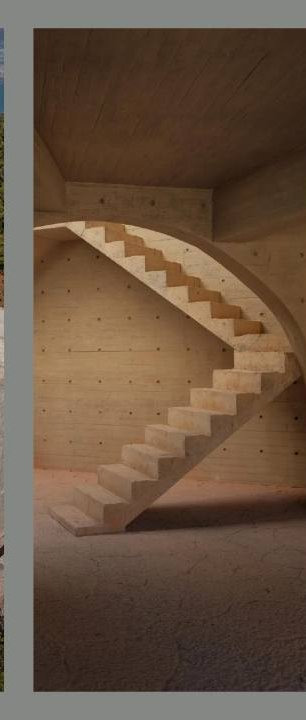
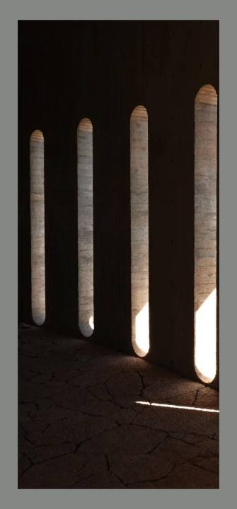
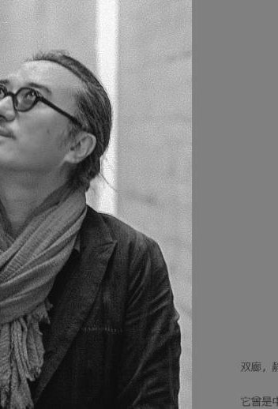
「木夕大里」诞生于八旬的一次回望与远行。从乡土的古老技艺出发，他将对自然、栖居与艺术的理解，沉淀为一处可以栖身的梦境——既是建筑，也是一件可以居住的作品。
21 间客房与套房，散落于山林的不同高度。每一间都以本地夯土、毛石与加拿大枫木筑就，将山海揽入窗内。
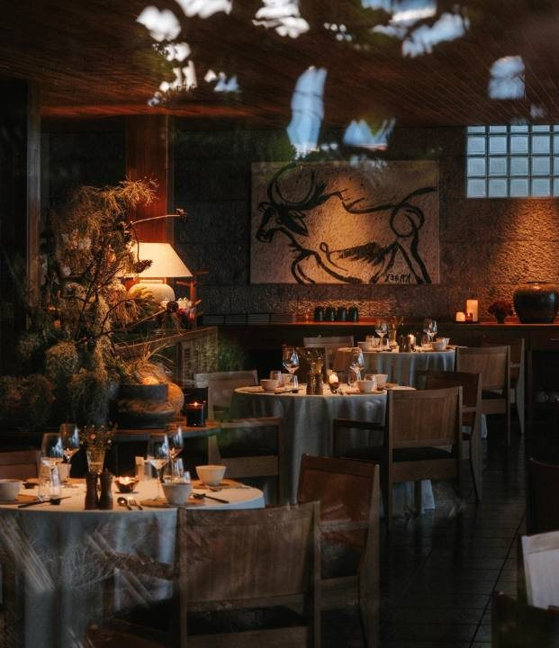
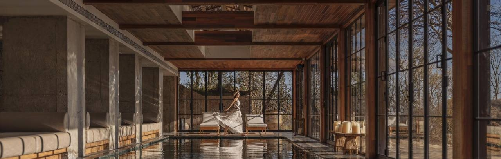
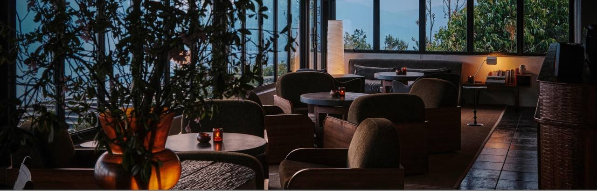
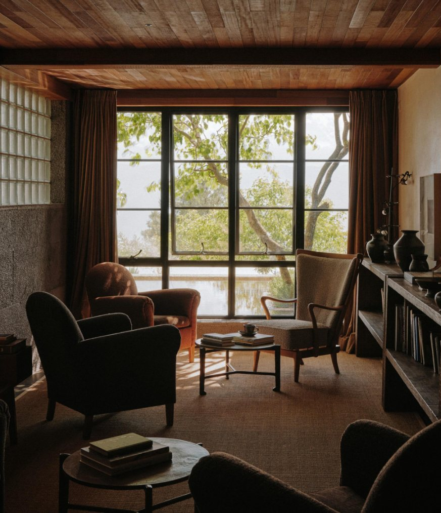
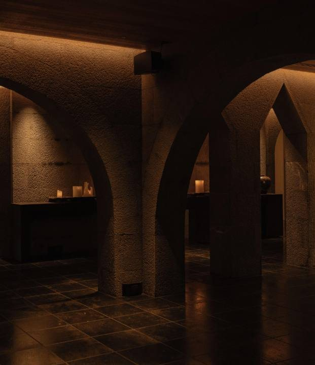
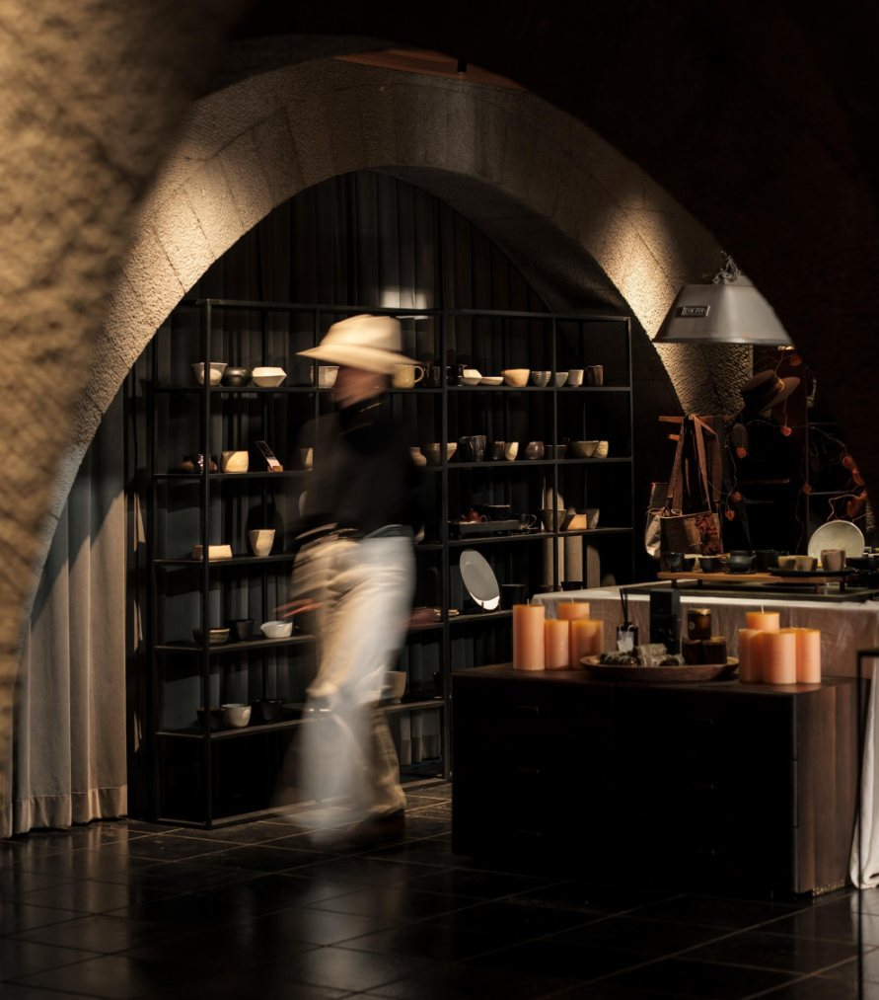
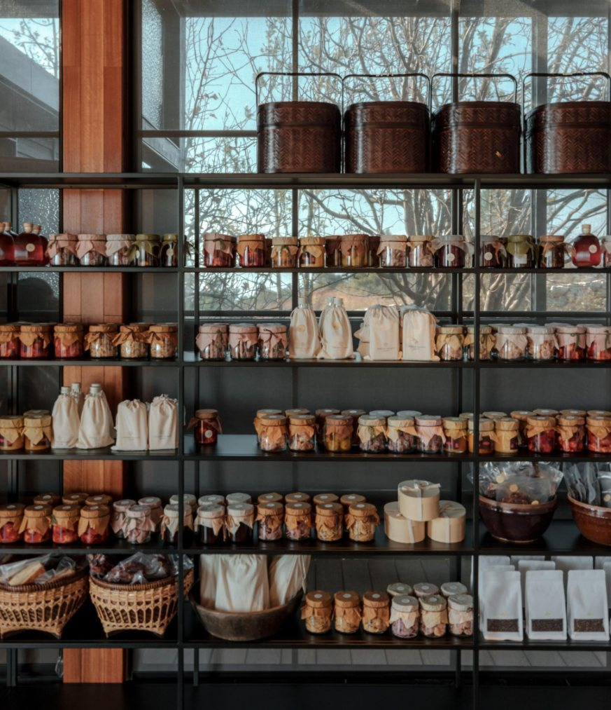
从晨间的山雾到夜空的繁星，木夕大里以在地的方式，邀你重新感知时间与四季。
沿伙山的林径而行，在海拔之上俯瞰洱海的辽阔。
由专人引导，走入八旬亲手浇筑的山水剧场。
远离城市的光，让夜空回到它本来的样子。
循着四季的节律，采撷山野，把餐桌摆进林间。
走进古老的白族村落，触碰土地真实的纹理。
从抵达到离开，一位管家照拂你停留的每一刻。
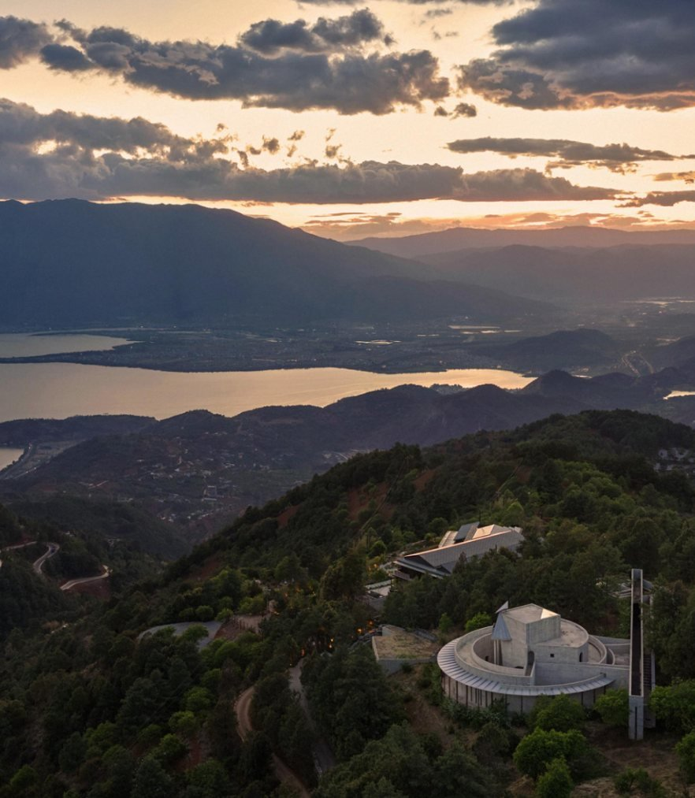
云南省大理白族自治州大理市双廊镇伙山村
木夕大里 · 伙山度假酒店
Huoshan Village, Shuanglang Town, Dali, Yunnan